Một vài thông tin về thành phố Đà Nẵng
Lịch sử hình thành
Tác giả: Nhóm nghiên cứu Đà Nẵng
Đà Nẵng có lịch sử hình thành lâu đời từ thời văn hóa Chăm Pa, phát triển thành thương cảng quan trọng từ thế kỷ XVI và chính thức trở thành thành phố trực thuộc Trung ương vào ngày 1/1/1997 sau khi tách khỏi tỉnh Quảng Nam - Đà Nẵng. Với vị trí chiến lược, Đà Nẵng đã trải qua nhiều thăng trầm, từ tên gọi Cửa Hàn, Tourane thời Pháp thuộc đến trung tâm kinh tế, du lịch lớn của miền Trung hiện nay.
Du lịch và văn hóa
Tác giả: Nhóm sinh viên từ facebook
Du lịch văn hóa Đà Nẵng nổi bật với sự kết hợp hài hòa giữa di sản lịch sử, tâm linh và làng nghề truyền thống. Các điểm đến đặc sắc bao gồm Danh thắng Ngũ Hành Sơn (di sản tư liệu), Bảo tàng Điêu khắc Chăm, Chùa Linh Ứng, Đình cổ Hải Châu và làng nghề nước mắm Nam Ô. Đây là trung tâm kết nối 3 di sản thế giới: Huế, Hội An, Mỹ Sơn.
Những món ăn ngon tại thành phố Đà Nẵng
1.mỳ quảng

Mì Quảng là một loại sợi mì, thường được làm từ bột gạo xay mịn với nước từ hạt dành dành và trứng cho có màu vàng và tráng thành từng lớp bánh mỏng, sau đó thái theo chiều ngang để có những sợi mì mỏng khoảng 5 -10mm. Khi thực hiện món ăn, dưới lớp mì là các loại rau sống, mì Quảng phải ăn kèm với rau sống 9 vị thì mới tạo nên được hương vị nồng nàn: húng quế, xà lách tươi, cải non mới nụ, giá trắng có thể được trụng chín hoặc để sống, ngò rí, rau răm với hành hoa thái nhỏ và thêm hoa chuối cắt mỏng. Trên mì là thịt lợn, tôm, thịt gà, thịt cá lóc (đôi khi có trứng luộc) cùng với nước dùng được hầm từ xương heo. Người ta còn bỏ thêm hành lá thái nhỏ, rau thơm, ớt đỏ... Thông thường nước dùng được gọi là nước nhân, đây cũng là một loại nước lèo nhưng rất cô đặc và ít nước. Ngoài ra mì còn được dùng kèm với bánh tráng mè, thêm cả đậu phộng rang giòn thơm tạo nên hương vị đặc trưng.
thông tin của các quán mỳ ngon tại Đà Nẵng
những quán mỳ ngon tại Đà Nẵng
2.mỳ bánh xèo
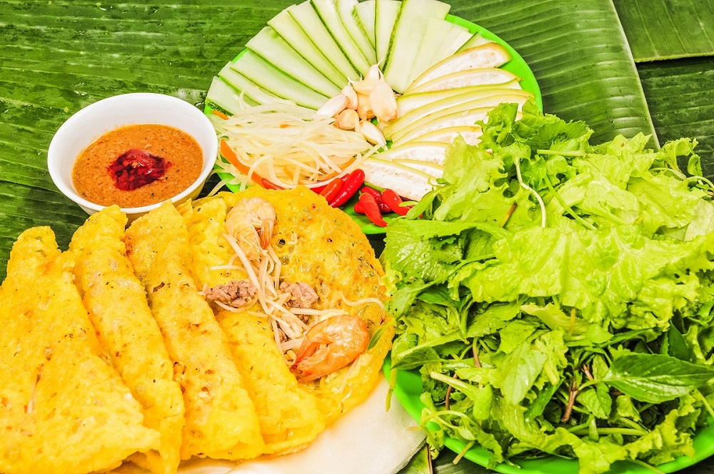
Bánh xèo miền Trung là một dạng biến thể của bánh xèo truyền thống vốn là một món ăn đặc sản của ẩm thực Việt Nam. Từ xa xưa, bánh xèo bắt nguồn như một món ăn bình dân, là sự kết hợp giữa các nguyên liệu địa phương dễ tìm như bột gạo, tôm, thịt, và giá đỗ.
Khi du nhập vào Đà Nẵng, món ăn này đã được người dân nơi đây biến tấu, tạo nên hương vị riêng biệt để phù hợp với khẩu vị và đặc trưng vùng miền. Khác với bánh xèo miền Nam thường có kích thước lớn, bánh xèo Đà Nẵng thường nhỏ hơn, giòn rụm, vàng óng và được cuốn kèm rau sống, bánh tráng, chấm cùng nước mắm chua ngọt.
thông tin của các quán bánh xèo ngon tại Đà Nẵng
những quán bánh xèo ngon tại Đà Nẵng
3.bún mắm nêm
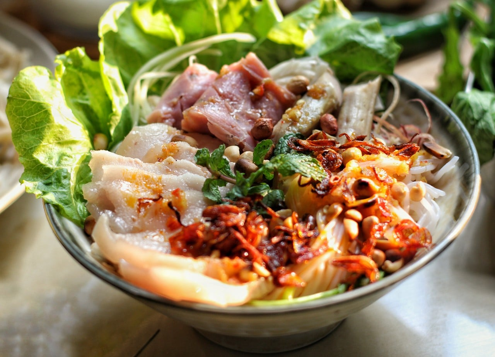
Đà Nẵng là thiên đường của ẩm thực với vô vàn món ăn khác nhau. Đặc biệt, Đà Nẵng sở hữu rất nhiều món đặc sản khiến cho ai từng thưởng thức đều không thể nào quên được hương vị của nó.
Bên cạnh những món hải sản, sơn hào hải vị sang trọng thì những món ăn ngon Đà Nẵng bình dị, mộc mạc vẫn tồn tại. Tuy chỉ được phục vụ trong những quán nhỏ, những góc phố hay con hẻm bé tí tẹo. Thế nhưng khi tới các nơi này bạn mới có thể cảm nhận được rõ nét hương vị truyền thống được lưu truyền qua bao đời.
thông tin của các quán bánh bún mắm ngon tại Đà Nẵng
những quán bún mắm nêm ngon tại Đà Nẵng

 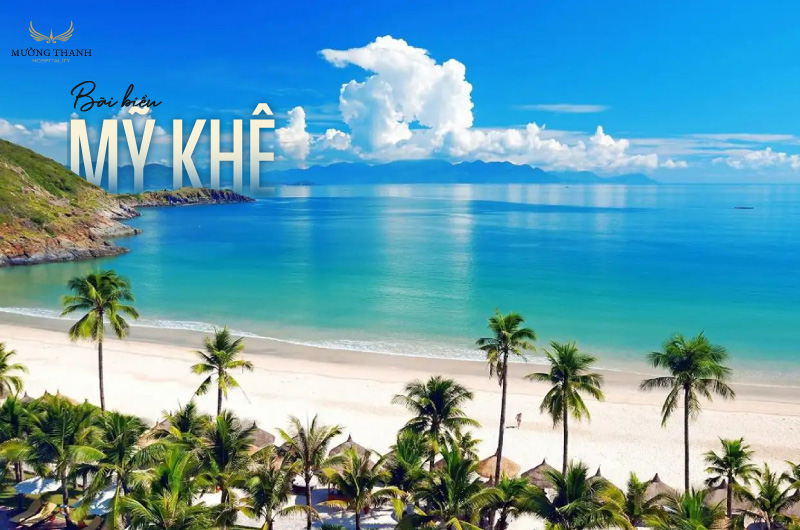
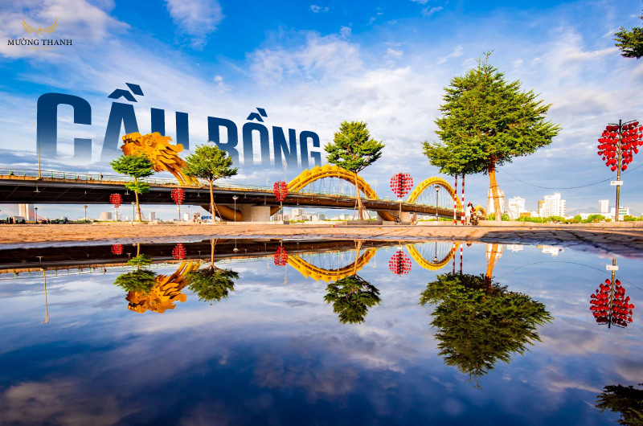
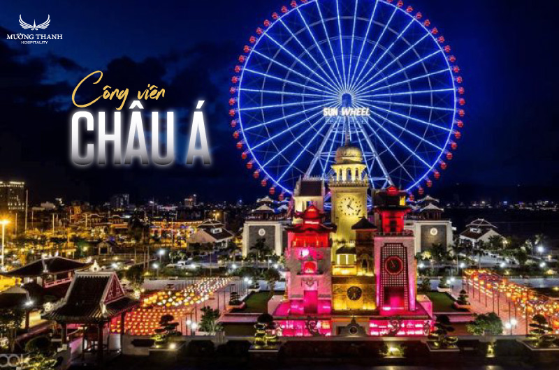
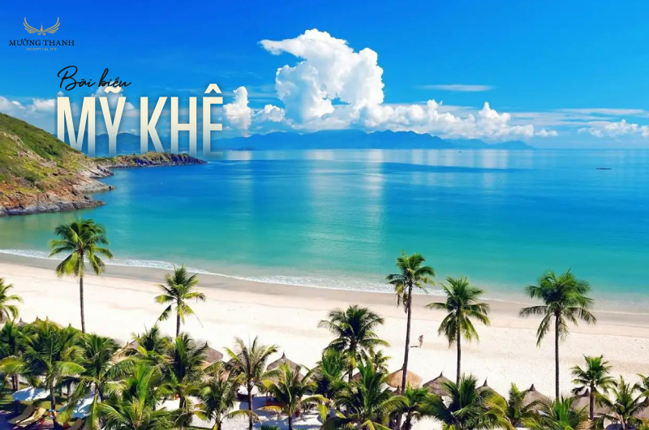
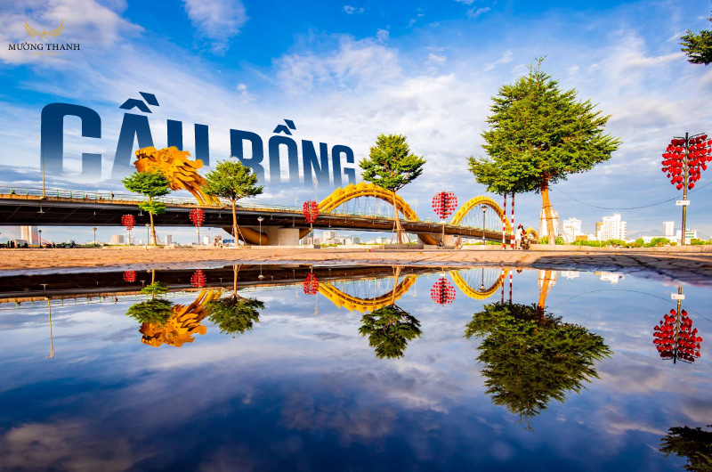
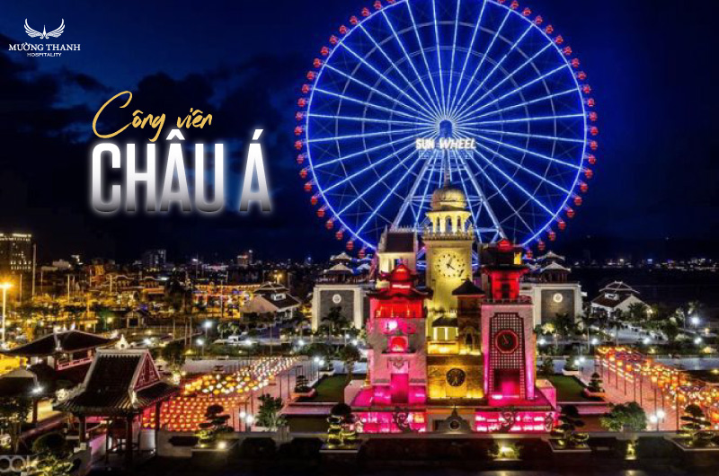
 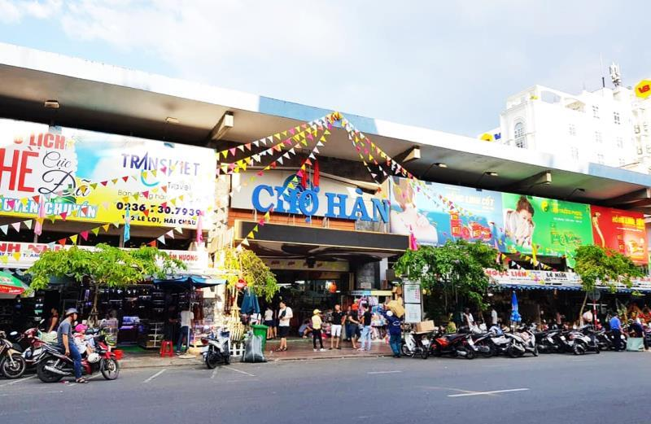
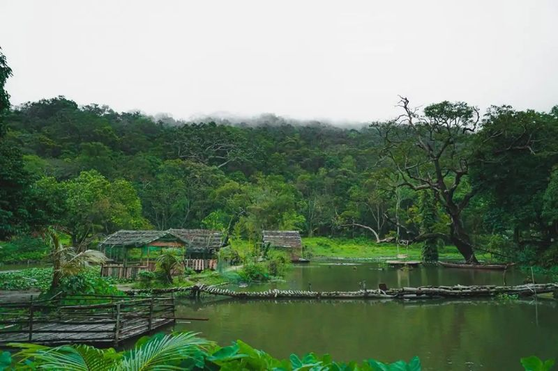
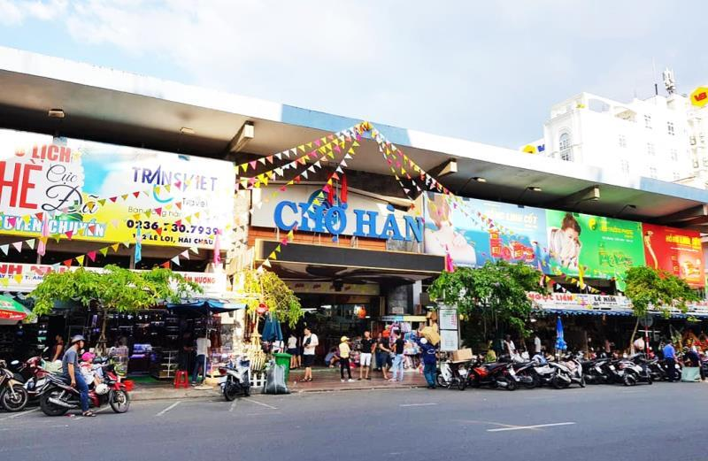
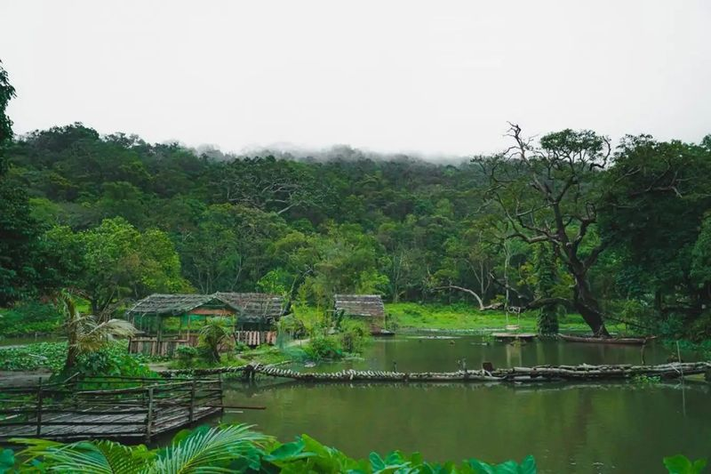
 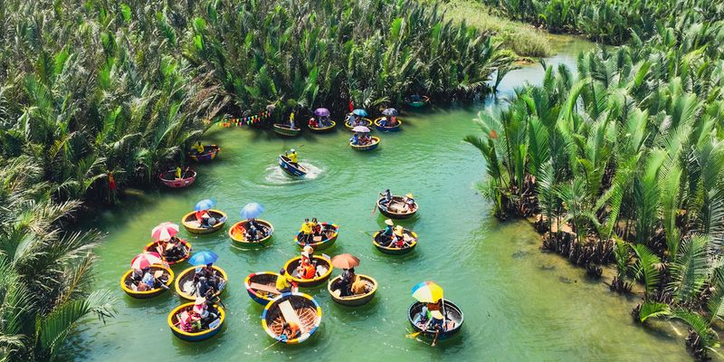
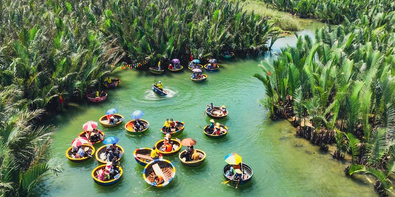
Góc bình luận